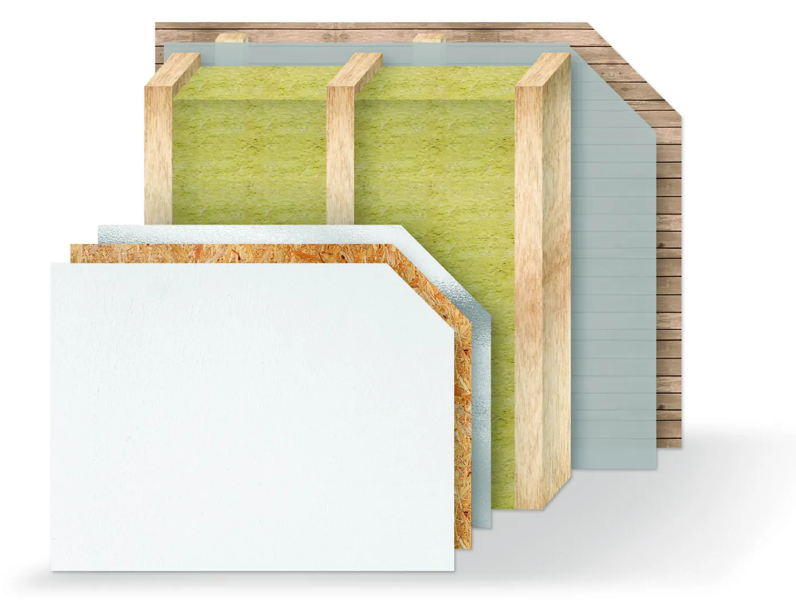

Domy szkieletowe z drewna – od projektu do odbioru kluczy
Dom szkieletowy, nazywany też kanadyjskim, ma konstrukcję z drewna wypełnioną izolacją. Budujemy go od fundamentów po wykończenie i sami wykonujemy w nim wszystkie instalacje.

Dlaczego drewno
W krajach bogatych w lasy buduje się z drewna od wieków. To materiał mocny i stabilny, a jednocześnie elastyczny – dobrze znosi naprężenia.
Drewno na elewacji pokryte woskiem, bejcą albo lakierem dobrze pokazuje usłojenie i nadaje domowi ciepły wygląd. Ściany zewnętrzne obudowujemy drewnem świerkowym albo tworzywem – do wyboru.
- Konstrukcja dopasowana do projektu – gotowego albo przygotowanego od podstaw
- Dokładność montażu – od niej zależy trwałość domu i brak błędów na kolejnych etapach
- Wykończenie w wybranym standardzie, wewnątrz i na zewnątrz

Elewacja z desek układanych poziomo.
Co jest w ścianie
O jakości domu szkieletowego decyduje to, czego po wykończeniu nie widać. Najedź na numer albo na warstwę, żeby zobaczyć, gdzie leży.

- Płyta gipsowo-włóknowa FermacellWzmocniona włóknami, dźwiękochłonna i ognioodporna. Można na niej wieszać półki i obrazy.
- Płyta OSB3 lub OSB4Usztywnia ścianę od środka i daje mocne podłoże pod wykończenie.
- Folia paroizolacyjnaChroni izolację przed wilgocią z wnętrza domu.
- Szkielet z drewna i wełna mineralnaMiędzy elementami konstrukcji 150 mm wełny mineralnej lub skalnej.
- WiatroizolacjaZatrzymuje wiatr, a jednocześnie pozwala ścianie oddychać.
- Elewacja z desekŚciany zewnętrzne obudowane drewnem świerkowym albo tworzywem.
Rysunek i opis warstw: katalog i opis technologii EXEVER.

Wnętrze gotowego domu.
Ogrzewanie i automatyka od tej samej ekipy
Instalacje elektryczne, sanitarne i grzewcze to nasza pierwsza specjalność. W domu, który budujemy, wykonujemy je sami.
- Ogrzewanie do wyboru – kotłownia albo pompa ciepła, razem z instalacją
- Automatyka domowa i zdalne sterowanie
- Monitoring i instalacje teletechniczne
- Fotowoltaika, jeśli chcesz produkować własny prąd
Nasze domy
Od szkieletu w hali po gotową elewację.
 Dom z elewacją z pionowych desekrolety zewnętrzne, dach z blachy
Dom z elewacją z pionowych desekrolety zewnętrzne, dach z blachy
 Dom z przeszkleniami od podłogielewacja z desek pionowych i poziomych
Dom z przeszkleniami od podłogielewacja z desek pionowych i poziomych
 Elewacja z desek układanych poziomookna w grafitowych ramach
Elewacja z desek układanych poziomookna w grafitowych ramach
 Dom szkieletowy z elewacją z desekgotowy do przekazania
Wnętrze gotowego domudrzwi, podłoga, duże przeszklenia
Dom szkieletowy z elewacją z desekgotowy do przekazania
Wnętrze gotowego domudrzwi, podłoga, duże przeszklenia
 Konstrukcja ścian i dachumontaż w hali
Konstrukcja ścian i dachumontaż w hali
Przebieg budowy w 10 krokach
Od pierwszej rozmowy do przekazania kluczy prowadzi Cię jedna firma.
Zanim ruszy budowa
- 1Bezpłatna konsultacja
Poznajemy Twoje potrzeby i oczekiwania, doradzamy najlepsze rozwiązania.
- 2Dobór lub stworzenie projektu
Pomagamy wybrać gotowy projekt albo projektujemy dom od podstaw – dopasowany do działki i stylu życia.
- 3Wycena i zakres prac
Przedstawiamy szczegółową ofertę z podziałem na etapy realizacji.
- 4Umowa
Podpisujemy przejrzystą umowę, w której jasno określamy terminy, zakres i koszty.
- 5Formalności w urzędzie
Pomagamy uzyskać pozwolenie na budowę albo przeprowadzamy procedurę zgłoszenia.
Budowa i odbiór
- 6Prace przygotowawcze
Wyrównujemy teren i wykonujemy fundamenty pod dom szkieletowy.
- 7Montaż konstrukcji
Wznosimy konstrukcję szkieletową, montujemy dach, okna i drzwi.
- 8Instalacje i ocieplenie
Wykonujemy wszystkie instalacje i ocieplamy budynek zgodnie z normami.
- 9Wykończenie wnętrz i elewacji
Prace wykończeniowe wewnątrz i na zewnątrz – w standardzie, który wybierzesz.
- 10Odbiór i dokumentacja
Odbiór techniczny i przekazanie gotowego domu z pełną dokumentacją.
Najczęstsze pytania
Czy pomagacie w formalnościach?
Tak. Pomagamy uzyskać pozwolenie na budowę albo przeprowadzamy procedurę zgłoszenia – zależnie od tego, czego wymaga Twój dom i działka.
Muszę mieć gotowy projekt?
Nie. Pomagamy wybrać gotowy projekt albo projektujemy dom od podstaw, dopasowany do działki i stylu życia.
Kto robi fundamenty?
My. Wyrównujemy teren i wykonujemy fundamenty pod dom szkieletowy – to część budowy, nie osobne zlecenie.
Jakie ogrzewanie mogę wybrać?
W naszych domach można zastosować różne rodzaje ogrzewania. Instalacje grzewcze, kotłownie i pompy ciepła wykonujemy sami, więc dobierzemy rozwiązanie do domu i Twoich oczekiwań.
Ile kosztuje dom?
To zależy od projektu, działki i standardu wykończenia. Po konsultacji przygotowujemy szczegółową ofertę z podziałem na etapy – a w umowie zapisujemy terminy, zakres i koszty.
Co dostaję przy odbiorze?
Po zakończeniu budowy przeprowadzamy odbiór techniczny i przekazujemy dom razem z pełną dokumentacją.
Masz działkę albo projekt? Porozmawiajmy.
Pierwsza konsultacja jest bezpłatna. Doradzimy, zanim cokolwiek podpiszesz.